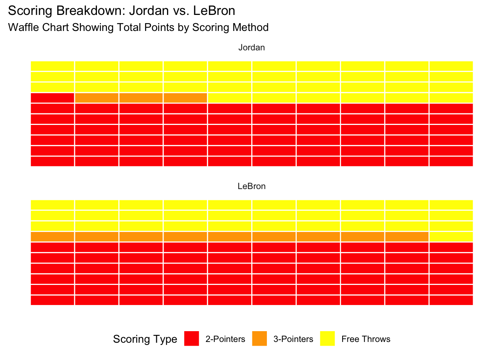

Introduction
LeBron James and Michael Jordan are two of the most iconic players in NBA history. While Jordan’s legacy is unmatched in certain aspects, LeBron’s scoring efficiency, usage rate, and longevity paint a compelling picture of his superiority as a scorer.
Milestone Progression
One of the first indicators of LeBron’s scoring prowess is how quickly he reached key milestones. LeBron surpassed 10,000, 20,000, and 30,000 career points faster than Jordan in terms of games played. This achievement is a testament not only to his scoring consistency but also to his ability to perform at an elite level over a long career. Jordan was undoubtedly explosive, but LeBron’s sustained dominance over more games shows his efficiency and adaptability in scoring across eras, teams, and playstyles.
Field Goal Percentage Over Their Careers
Efficiency is another major factor in this debate. Over their careers, LeBron has consistently maintained a higher field goal percentage compared to Jordan. Even as LeBron aged, his shooting percentages remained strong, thanks to his ability to evolve his game. From attacking the rim to developing a more polished jump shot, LeBron has shown a level of efficiency that few players in NBA history can match. While Jordan had legendary scoring bursts, his efficiency often fluctuated due to his heavy reliance on mid-range shots and the physical toll of his style of play.
# Data for Jordan and LeBron
jordan_data <- data.frame(
season = 1:15,
FG_Percentage = c(51.5, 45.7, 48.2, 53.5, 53.8, 52.6, 53.9, 51.9, 49.5, 41.1, 49.5, 48.6, 46.5, 41.6, 44.5)
)
lebron_data <- data.frame(
season = 1:15,
FG_Percentage = c(41.7, 47.2, 48.0, 47.6, 48.4, 49.0, 50.3, 51.0, 53.1, 56.5, 56.7, 48.8, 52.0, 54.8, 54.2)
)
# Field Goal Percentage Line Plot
plot(jordan_data$season, jordan_data$FG_Percentage, type="o", col="red", pch=16,
xlab="Season (Index)", ylab="Field Goal Percentage", main="Career FG% Comparison: Jordan vs. LeBron")
lines(lebron_data$season, lebron_data$FG_Percentage, type="o", col="blue", pch=16)
legend("bottomright", legend=c("Jordan", "LeBron"), col=c("red", "blue"), lty=1, pch=16)Scoring Breakdown by Type
LeBron’s versatility in scoring is unmatched. While Jordan was dominant with his mid-range game and ability to draw fouls, LeBron scores in every way imaginable. The breakdown of their points tells the story: LeBron has a significantly higher volume of three-pointers, showing his ability to adapt to the modern NBA. His balance of two-point, three-point, and free-throw scoring makes him a more well-rounded offensive threat
# Scoring breakdown data
scoring_types <- c("2-Pointers", "3-Pointers", "Free Throws")
jordan_scoring <- c(12192, 581, 7327)
lebron_scoring <- c(15000, 2300, 7800)
# Line plot for scoring breakdown
plot(1:3, jordan_scoring, type="o", col="red", pch=16, xaxt="n",
xlab="Scoring Type", ylab="Points", main="Scoring Breakdown: Jordan vs. LeBron")
axis(1, at=1:3, labels=scoring_types)
lines(1:3, lebron_scoring, type="o", col="blue", pch=16)
legend("topright", legend=c("Jordan", "LeBron"), col=c("red", "blue"), lty=1, pch=16)Points Per Game Over the Seasons
Consistency is where LeBron truly shines. Over 15 seasons, LeBron’s points-per-game averages remained remarkably stable, with almost no major dips even as he entered the latter stages of his career. Jordan, on the other hand, had a few seasons where his scoring dipped noticeably, particularly during his comeback years. LeBron’s ability to consistently produce at a high level, regardless of the team he’s on or the system he’s in, demonstrates his unparalleled durability and impact as a scorer.
# Data for Jordan and LeBron
jordan_points <- data.frame(
season = 1:15,
PTS = c(28.2, 22.7, 37.1, 35.0, 32.5, 33.6, 31.5, 30.1, 32.6, 26.9, 30.4, 29.6, 28.7, 22.9, 20.0)
)
lebron_points <- data.frame(
season = 1:15,
PTS = c(20.9, 27.2, 31.4, 27.3, 30.0, 28.4, 29.7, 26.7, 27.1, 27.1, 27.1, 25.3, 25.3, 26.4, 27.5)
)
# Line Plot for Points Per Game Over Seasons
plot(jordan_points$season, jordan_points$PTS, type="o", col="red", pch=16,
xlab="Season (Index)", ylab="Points Per Game", main="PPG Comparison: Jordan vs. LeBron")
lines(lebron_points$season, lebron_points$PTS, type="o", col="blue", pch=16)
legend("topright", legend=c("Jordan", "LeBron"), col=c("red", "blue"), lty=1, pch=16)
Final Thoughts
While Jordan may have the edge in iconic scoring moments, LeBron’s efficiency, adaptability, and consistency over a longer career make him the better scorer overall. The graphs above illustrate how LeBron’s game evolved to dominate in ways Jordan didn’t need to or couldn’t. The numbers don’t lie—LeBron’s longevity and ability to stay productive in a changing NBA landscape put him at the top.